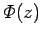
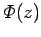
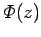

Inhalt Index DeskTop Bronstein

 Lineare Integralgleichungen Singuläre Integralgleichungen Singuläre Integralgleichungen mit Cauchy-Kernen Hilbertsches Randwertproblem
Lineare Integralgleichungen Singuläre Integralgleichungen Singuläre Integralgleichungen mit Cauchy-Kernen Hilbertsches Randwertproblem


Gesucht ist eine in S+ und S- holomorphe, im Unendlichen verschwindende Funktion , die auf  die Randbedingung (11.90c) erfüllt. Eine Lösung  des HILBERTschen Problems ist in der Form (11.89a) darstellbar. Zufolge der ersten Gleichung von (11.90a) ist damit eine Lösung
die Randbedingung (11.90c) erfüllt. Eine Lösung  des HILBERTschen Problems ist in der Form (11.89a) darstellbar. Zufolge der ersten Gleichung von (11.90a) ist damit eine Lösung  der charakteristischen Integralgleichung bestimmt.
der charakteristischen Integralgleichung bestimmt.